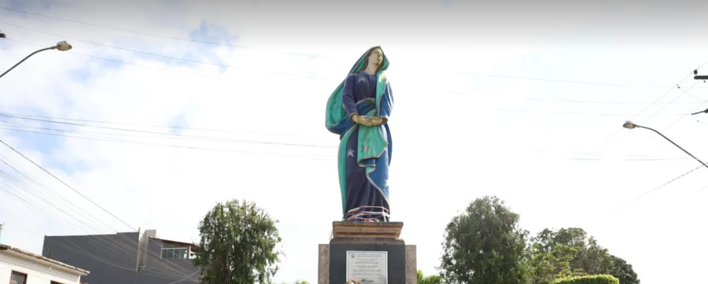

Nossa Senhora das Dores
História
Os primeiros registros do município datam da era colonial, precisamente, de 04 de outubro de 1606, logo nos primeiros anos da colonização portuguesa em Sergipe. Na ocasião, o capitão-mor Nicolau Felipe de Vasconcelos doou para Pero Novais de Sampaio duas léguas de terras devolutas (revertidas a Coroa Portuguesa) na região entre as bacias dos rios Sergipe e Japaratuba, com o objetivo de propagar a criação de gado. Mas a comunidade cresceu com a cultura do algodão, que a impulsionou economicamente.
Os conflitos entre desbravadores portugueses e os índios nativos no século XVII marcaram a região, pois ela abrigava centros de cárcere e execução dos que resistiam às frentes colonizadoras, a ponto do lugar receber seu primeiro nome: Enforcados. Em meados do século XIX, segundo relatos históricos colhidos pelo escritor lagartense Laudelino Freire (1873-1937), o então povoado recebeu um missionário que fazia pregações, o que influenciou a mudança de nome.
Documentos e registros sobre o religioso e a mudança de nome se perderam no tempo, ou se desencontraram, mas reza a história que uma carta de um juiz de paz assinou o nome definitivo: Nossa Senhora das Dores, evocando um título que a tradição católica concede a Virgem Maria, a que testemunhou com altivez a morte do filho Jesus Cristo.
A despeito das divergências, se como Enforcados ou Nossa Senhora das Dores, o povoado foi elevado a freguesia e distrito administrativo em 28 de abril de 1858 e emancipado politicamente em 11 de junho de 1859. A fundação do município se dá finalmente em 23 de outubro de 1920, quando se desmembra de Capela. Aos poucos, ‘Dores’, hoje carinhosamente chamada, se torna uma das referências da região do Médio Sertão Sergipano, assumindo a pecuária e o comércio como forças econômicas.
fonte: https://nossasenhoradasdores.se.gov.br/historiaPontos Turísticos
Paróquia Nossa Senhora das Dores
Em 28 de abril de 1858, criava-se a Freguesia de Nossa Senhora das Dores, o povoado de Enforcados foi elevado ao status de Paróquia e Distrito Administrativo. " Capela de Nossa Senhora das Dores " deixou de ser filial a Matriz de Jesus Maria José do Pé do Branco ( atual Siriri), para torna-se sede paroquial. A Freguesia de Nossa Senhora das Dores, teve como primeiro Pároco o Revmo. Padre Leandro Ribeiro dos Santos, fazia parte do território sergipano, da Arquidiocese de São Salvador ( Bahia ), regida na época por Dom Romualdo Antônio de Seixas.
Balneario Pássaro Azul
O Balneário é um espaço amplo com 3 piscinas, ideal para momentos em família durante os finais de semana. Com certeza uima ótima pedida de lazer para os que se encontram próximo da região de Nossa Senhora das Dores e proximidades.
Dados Gerais de acordo com o IBGE
| Prefeito (a) | Luíz Mário Pereira De Santana |
| Vice-Prefeito (a) | Fernanda Sobral Lima |
| Site do município | https://nossasenhoradasdores.se.gov.br/ |
| Área territorial | 483,182 km² |
| População estimada | 24.580 pessoas |
| Densidade demográfica | 50,85 hab/km² |
| IDHM | 0,600 |
| PIB per capita | R$ 12.896,12 |